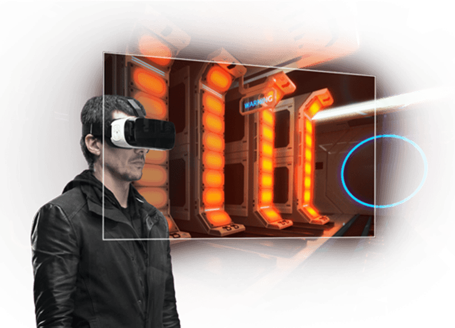

<link rel="import" href="../../bower_components/polymer/polymer.html">
<link rel="import" href="el-panorama.html">

<dom-module id="panel-autostadt">
    <template>
        <style>
        </style>

        <div class="panel__toggle">
            <a href="#/vw-e-vc/autostadt" class="panel__toggle-open">
                
            </a>
            <a href="#/vw-e-vc/fabrica" class="panel__toggle-close">
                
            </a>
        </div>

        <el-panorama name="autostadt">
            <overlay-plain role="overlay">
                <div class="overlay__content-columns">
                    <div class="overlay__content-image">
                        
                    </div>
                    <div class="overlay__content-text">
                        Using virtual reality and 4D cinema, visitors are transported into the car manufacturers universe. Starting with a tour exploring the birth of its cars, continuing through Volkswagen’s iconic headquarters in Germany – Autostadt, and on through some of the pillars of the brand, with a special surprise at the end. The experience provides a fun and entertaining journey through which the visitor is given a small taste of proximity to a brand inspired by their own life!
                    </div>
                </div>
            </overlay-plain>
        </el-panorama>
    </template>

    <script>
    Polymer({
        is: 'panel-autostadt',
        properties: {
            active: {
                type: Boolean,
                value: false,
                reflectToAttribute: true
            }
        },
    })
    </script>
</dom-module>
